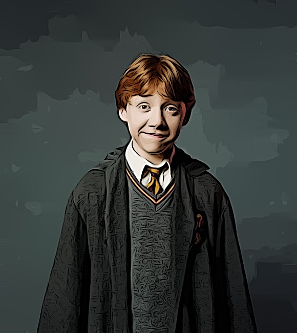

Steckbrief
Name: Ronald Bipus Weasley
Geburtsdatum: 1. März 1980
Eltern: Arthur und Molly Weasley
Herkunft: Ottery St. Catchpole, England
Zauberstab: Eschenholz mit einem Kern aus einem Einhornhaar
Zugehörigkeit: Gryffindor
Informationen zum Schauspieler
Ron Weasley wird im Film von Rupert Grint verkörpert.
Rupert Grint (geboren am 24. August 1988) wurde für die Rolle ausgewählt, als er elf Jahre alt war.
Durch seine Darstellung von Ron Weasley erlangte er weltweite Bekanntheit.
Nach der Harry Potter-Filmreihe setzte er seine Schauspielkarriere fort und wirkte in verschiedenen anderen Filmen mit.
Informationen zum Charakter
Ron Weasley ist einer der Hauptfiguren der "Harry Potter"-Filmreihe.
Er ist ein treuer Freund von Harry Potter und Hermine Granger und begleitet sie bei ihren Abenteuern in Hogwarts.
Ron ist mutig, loyal und manchmal auch ein wenig tollpatschig. Er stammt aus einer großen Zaubererfamilie und kämpft gegen die dunklen Kräfte an der Seite seiner Freunde.